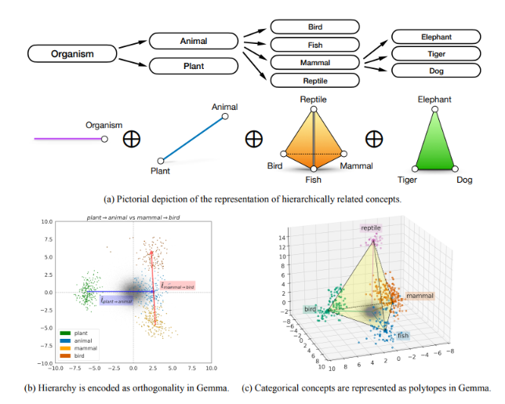

Understanding the Linear Representation Hypothesis
Published
This post draws heavily from "A Survey on the Linear Representation Hypothesis", and "Do Not Rely on the Linear Representation Hypothesis". I really enjoyed reading them and would recommend you read them too. If you must pick one, Do Not Rely is shorter and has some fun results, although I am a bit sceptical.
I tried to summarise and synthesise the two, primarily for my own learning. I'd appreciate feedback (contact me or comment on LessWrong), and will update this post if I have made mistakes or read something which changes my understanding.
what is the linear representation hypothesis?
Matrix multiplication is one of the fundamental building blocks of neural networks. It's really easy to stretch and rotate specific directions with matmuls, so it seems like models might use linear representations.
Briefly and informally, the linear representation hypothesis (LRH) posits that neural networks represent "concepts" with 1D subspaces - directions - of their activation space. There are many papers which show evidence that lots of models do something like this for some features at some layers, which I won't discuss in detail here. We will take it for granted that steering vectors and linear probes, to some extent, Just Work.
This is somewhat unsatisfactory, though, and leaves me with a number of questions:
- What, precisely, are
concepts?
- Why should we believe the model learns any coherent concepts at all instead of a bunch of inscrutable, spurious correlations and rules-of-thumb?
- Are all concepts represented as subspaces?
- So what? Even if we knew that all concepts are directions, what can we do with this knowledge?
So, we should be a bit more specific. We'll introduce a number of linear representation hypotheses, which provide a more useful frame for discussion.
what are the linear representation hypotheses?
First, weakness vs. strength, as introduced by Lewis Smith:
- "Weak" means that our hypothesis only applies to some concepts that the model represents.
- "Strong" means that it applies to (almost) all of the concepts the model represents.
Then, measurement, and intervention LRHs from Park et al. '24. The statements of these hypotheses should make it clear how knowing whether they are true or not would be useful, and give a bit more clarity as to what we mean by a "concept". I'll present my informal interpretations of them here.
The measurement LRH claims that we can tell how intensely1 a model is representing the concept by using a linear probe (taking the dot-product of the activation and a "probe" vector for a given concept).
Intuitively, for dual concepts like love-hate or masculine-feminine, we might expect one side of the subspace to correspond to one pole. For instance, we might see dot-product >= threshold for love and < threshold for hate. It's not that clear from intuition how this might work for non-dual concepts like "concerning the Golden Gate Bridge". Park et al. '25 discusses this and shows empirically that hierarchy ("X is-a Y") is encoded as orthogonality under the causal inner product2 and categorical concepts are represented as polytopes (...shapes, see image below, taken from Park et al. '25).

The intervention LRH posits that we can add a steering vector to the activation of the model to make it more/less likely to output something relating to the concept, while not affecting unrelated concepts.
It's important to note that steering and probe vectors for the same concept do not have to be equal. In theory, a vector can work well for steering and poorly as a probe or vice versa, although I think in practice this is uncommon. While it seems intuitive that the measurement and intervention LRH are equivalent, they aren't necessarily. Park et al. '24 shows that measurement LRH intervention LRH for the last-layer activations (i.e. before unembedding) under some assumptions.
are they true?
Now we have some more precise questions to ask, we're of course interested in finding out whether they're true or not. As mentioned previously, there is lots of evidence that linear steering and probing work, and these techniques are heavily used in practice. This would suggest that weak LRH for both measurement and intervention is true.
However, there are are some issues which should give us pause.
For one, steering and linear probing seem to work better in intermediate layers than in the last layer. Theoretically, it's been shown that under certain assumptions the measurement and intervention LRH can hold for last-layer activations. It's an open problem why the representations seem to be "more linear" in intermediate layers, even though we're passing the intermediate activations through intentionally nonlinear activation functions.
Also, not all features seem to be linearly represented. Read the first paragraph of "A bit of related work" from "Do not rely on the linear representation hypothesis", for various interesting LRH counterexamples. Hewitt provides more citations than I was going to, and gives good explanations of them and their limitations. Maybe nonlinearity is the default, and we just happen to have a lot of uses for the "nice" linear concepts?
weird steering
This is what got me thinking about the LRH in the first place. To summarise, Hewitt finds steering vectors which robustly steer different concepts at different norms, and also finds pairs of steering vectors which (individually) steer well for unrelated concepts but when summed steer for an entirely unrelated concept.
Of course, this is very interesting! I have a suspicion that optimisation will lead to somehow OOD steering vectors, but Hewitt has already pre-empted this and I don't have a good counter-argument. :/
Technically, strong LRH for intervention is compatible with both findings, since each concept might have both a LRH-compatible steering vector, as well as others that steer it well but are LRH-incompatible. I would be interested to see if we can find steering vectors with similarly weird behaviours without optimisation, for instance by just searching over a lot of difference-in-means steering vectors.